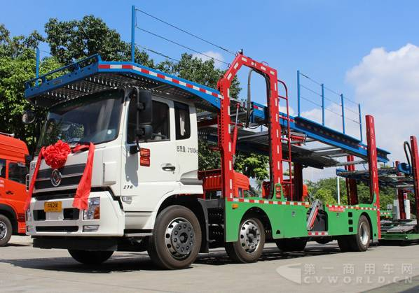

新国标GB1589实施了！
新版GB1589-2016明确规定：新增中置轴挂车的分类，中置轴车辆运输挂车长度限值12米、列车长度限值22米；此外，车宽由2.5米修订为 2.55米，以满足车辆装载两排托盘的宽度需求。
借政策机遇，主流重卡制造商不遗余力纷纷推出满足新国标的轿运产品。据第一商用车网统计，目前，解放、重汽、东风、陕汽、红岩、欧曼、东风汽、江淮、一汽解放柳特等品牌均有推出中置轴轿运车车型，有的产品刚刚面世，有的正在进行推广活动，有的已经收获千辆以上的订单。
那么，这些新品在技术含量上有哪些不同，卖点有哪些？在满足新国标的同时，各有哪些特色呢？
红岩：整车高度最低 装配 “杰时达”车联网系统
红岩推出的杰狮中置轴轿运车，是同步IVECO轿运车技术平台开发，基于红岩杰狮M100底盘打造而成的。其在今年的北京车展上首次发布便斩获2000辆大单。
该车最大的亮点是上装部分由红岩开发研制，拥有目前国内最低整车高度（整车高度仅为2670mm），车架上翼面离地高度：前悬架处826mm，后悬架处906mm。其外观尺寸为8625mm×2500mm×2670mm，整车质量为6370kg，牵引质量为18000kg。其具备高承载性，采用了叠装装置新技术，可以运输8-10辆汽车，在后部加上挂车后，上层能够装5辆轿车，下层能够装4辆。
在动力性方面，该车采用Cursor9发动机，排量为8.71L，最大功率为290马力，最大扭矩1250N•m，采用电控高压共轨+SCR形式，排放满足国五标准；采用法士特10挡手动变速箱，换挡平顺；驾驶室采用四点悬浮结构，能够大幅提高驾乘人员的舒适性。
同时，该款轿运车装配上汽红岩“杰时达”车联网系统，具有车辆远程诊断与位置查询、车队管理与报表定制等十大智能管理功能，可有效提高车队运营管理效率。
在前不久举办的年中商务会上，一汽解放展出了一辆平头轿运车。该车是由J6M 6×2底盘改装而成。此外，据第一商用车网了解，解放还有采用悍V底盘改装的6×2和4×2中置轴轿运车车型。
据了解，解放年中会上展出的以J6M6×2底盘改装的中置轴轿运车车型，驾驶室采用富贵红涂装设计，轿运车分为两层平台，上层平台采用白色涂装，下层采用红色设计。驾驶室高度为2800mm，顶部为装载一辆轿运车预留了空间，主车部分能够装载5辆车，当连接上挂车后能够装9辆车左右。驾驶室采用四点悬浮设计，内部带有气囊减震座椅以及650mm宽卧铺，为驾驶员提供舒适的驾乘环境。
在动力方面，其搭载了大柴BF6M1013-28E4发动机，排量为7.146L，280马力发动机匹配4.444速比，10挡手动变速箱，起步加速能力强，经济车速高，更快更省油。该车的侧面有液压系统的控制杆，通过液压升降对上层的台板进行控制，调节上层车架的高低，装卸车快，能轻松调节最准确的装车角度。
另外，据悉，采用悍V底盘的6×2国五中置轴车辆运输车底盘开发已经到位，公告已经发布，匹配悍V高地板平顶驾驶室,，搭载大柴CA6DK1-32E5f发机，采用275/70R22.5层级真空轮胎，有效降低了车辆的底盘高度，车架上翼面离地930mm，整车高度2720mm，整车配备气囊悬挂，在保证承载力的同时，减少行驶震动。
此外，一汽解放柳特近期也曝出一款柳特神力牌的长头轿运车。其采用6×2驱动方式，外形尺寸（长宽高）为10900mm×2500mm×3800mm，最高车速90km/h，驾驶室颜色可选红、黄、橙、绿、灰、白、蓝及其它颜色，驾驶室内部带有行车记录仪。该车采用低顶驾驶室，顶部为放置车辆预留了空间。此外，其发动机前置，能够在碰撞时起到缓冲作用。
柳特这款长头中置轴轿运车的总质量为21450kg，整备质量为11900kg，准拖挂车总质量20吨，在后部连接上挂车就成为车辆运输列车。由于长头车视线盲区比平头卡车更多，一汽解放柳特这款长头中置轴轿运车安装了比一般卡车更多的后视镜，从车窗边的门镜到翼子板上的后视镜及照地镜，全车的后视镜总数达到7个之多。
作为压轴车型，东风商用车推出的首款中置轴轿运车，采用天锦底盘打造，由牵引车及中置轴挂车前后两部分，经专用联机装置联接组成列车，采用叠装装置新技术，可以运载8-10辆中大型乘用车辆。牵引车部分可以独立运行，用作乘用商品车短驳运输。并且，东风商用车在近期启动了“轿运万里行”活动，对中置轴轿运车进行了重点推广，并与一些客户达成意向订单。
动力方面，该车搭载ISDe270 40系列发动机，最大功率为270马力，后桥速比4.44。1800bar超高压燃油喷射，燃油雾化效果好，燃烧更充分。0.535超低风阻系数，有效降低行驶阻力，节省燃油。整车采用轻量化设计，设计上应用有限元分析软件，广泛采用高强度轻质材料。
该车驾驶室高度2700mm，车架高度1000mm，具备更大的承载空间。变速箱预留取力器接口，可满足不同改装需求；排气制动阀使长下坡减少制动频次，提高制动可靠性。座椅采用人体工程学原理设计，可按坐姿习惯进行调节，调节范围在同类产品中最大，带给驾驶员舒适感受；卧铺采用机织面料，宽度达580mm。
东风天锦中置轴轿运车具有经济节油、改装便利、安全舒适的优势，车辆采用了倾斜式的放置方式，充分利用了装载空间。主车和挂车可分离使用，短途倒运灵活方便。